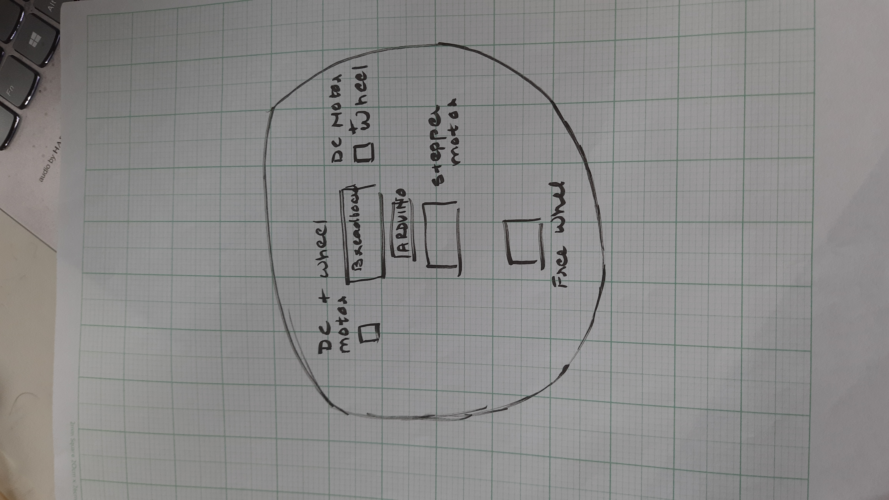

Microcontrollers
Introduction to Microcontrollers, Digital Pins, Analog Input Pins, PWM and memory
As usual, today's class also began with our rituilistic website review following which we spent about 15-20 minutes reviewing topics from last class i.e. Introduction to Microcontrollers, Digital Pins, Analog Input Pins, PWM and Memory.
Arduino Foundations and Motor Drivers
Arduino Foundations, Documenting Code, L9110 H Bridge Motor Driver, Quick Prototypes and Mechanical Design
ARDUINO FOUNDATIONS
Today's lecture was very programming focussed. We learnt about Arduino basics - what each term in the code means. We also learnt about various functions, constants and variables including the different data types. This seemed really interesting to me. I will most probably continue to explore and experiment with Arduino even after this course gets over. Here is a link to the page on Arduino foundations.
DOCUMENTING CODES
This was something very simple, yet useful for the entire course. Here is a link to the guide on efficient code documentation. However, I went ahead with the traditional method of documenting code. On my Arduino IDE, I exported my code as HTML and pasted that onto my text editor.
USING THE L9110 H BRIDGE POWER DRIVER TO DRIVE A MOTOR
This workshop was very intuitive and fairly simple for me. After connecting the GND. and VCC pin of the motor driver to GND. and 5V pin of the MetroBoard, I connected the driver input pins to my microcontroller digital output pins. I ran my code to run the motor and it worked perfectly. I also managed to run the motor at different speeds. Here is the outcome of my result:
QUICK PROTOTYPES AND MECHANICAL DESIGN
This lecture focussed on tools and safety measures required while making quick prototypes. It was more or less intuitive but it gave me an exposure to the materials I could use while making prototypes. Since I do not have access to a 3D printer or laser cutter, this was also useful to help me understand what I could possible do with the resources I have.
Readings & Documentation
This week we were given 3 readings to complete:
Reading 1: Arduino Projects Book
This was probably one of my favourite readings till now in this course. This book focussed on the very basics of Arduino and various projects we could make with it. Although we were only supposed to read chapters 1 through 3, I ended up going way beyond.
Reading 2: Voltage, Current, Resistance and Ohm's Law
This reading practically summed up my Physics coursework during my Sophomore year so it was more of a recap for me than new learning. However, I ended up exploring the same concepts on interactive platforms like TinkerCAD and it changed my entire way of thinking about circuits. I had a lot of fun.
Reading 3: Analog vs. Digital Pins
This reading helped me understand the difference between Analog signals and Digital Signals. I came to the knowledge that most Arduino projects involved working with both Analog and Digital Pins, which made more sense when I started working on this week's assignment.
Rapid Prototyping
Weekly Assignment
WEEKLY ASSIGNMENT
This week our assignment had a choice: We could either make a quick prototype of our final project or we could make a kinetic sculpture. I decided I wanted to make a prototype of my final project which was a robot cleaning machine. I had Planned my machine to be a disc shaped structure and here is the schematic I proposed:

The first obstacle I had to overcome was to get my structure moving using two dc motors. I tried to run both dc motors using one motor driver but for some reason it did not work. I switched to using two motor drivers but even then, only one motor would work. Here is my Arduino code:
const int A1A = 8; // define pin 8 for A-1A
const int A1B = 9; // define pin 9 for A-1B
const int B1A = 10;
const int B1B = 11;
void setup() {
Serial.begin(9600);
pinMode(A1A, OUTPUT); // specify these pins as outputs
pinMode(A1B, OUTPUT);
pinMode(B1A, OUTPUT);
pinMode(B1B, OUTPUT);
void loop() {
motorA('R', 1000);
motorB('R', 1000);
}
void motorA(char d, int t) {
if (d == 'R') {
digitalWrite(A1A, HIGH);
digitalWrite(A1B, LOW);
}
else if (d =='L'){
digitalWrite(A1A, LOW);
digitalWrite(A1B, HIGH);
}
delay(t); // allow motor to run for specified time
digitalWrite(A1A, LOW); // turn motor OFF
digitalWrite(A1B, LOW);
}
void motorB(char d, int t) {
if (d == 'R') {
digitalWrite(B1A, HIGH);
digitalWrite(B1B, LOW);
}
else if (d =='L'){
digitalWrite(B1A, HIGH);
digitalWrite(B1B, LOW);
}
delay(t); // allow motor to run for specified time
digitalWrite(B1A, LOW); // turn motor OFF
digitalWrite(B1B, LOW);
}
}
My prototype eventually failed but here is a video of what I got: